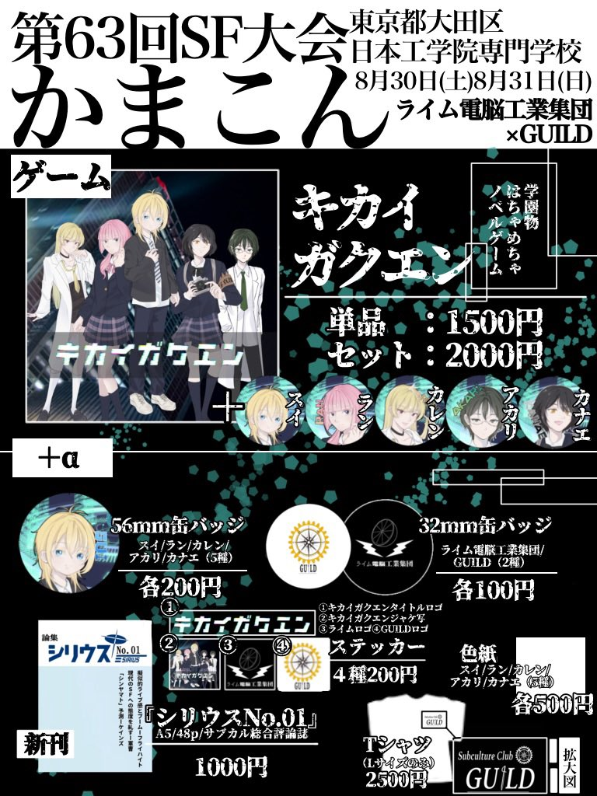

活動報告
2025.08.31
第63回日本SF大会（かまこん）に参加しました！

2025年8月30日（土）・31日（日）に日本工学院専門学校（東京都大田区）で開催された第63回日本SF大会（かまこん）に、「ライム電脳工業集団×GUILD」として参加しました！
当日はノベルゲーム『キカイガクエン』や論集『シリウス』No.01などを頒布し、多くの方にブースへお越しいただきました。初日には日本大学新聞社に取材もしていただきました！
ブースにお立ち寄りくださった皆さん、大会関係者の皆さん、ありがとうございました。